Outfielder · S10 제외 전후 비교
S10을 전체 조건에서 제외한 14명 결과. 기존 15명 원자료·분석·그래프는 보존했다.
세 지표 × 8방향의 기존 paired boxplot 형식, 색상·축 범위·남은 참가자의 위치를 유지했다. 점은 각 참가자의 con/incon 평균이며, 그 밖의 참가자나 값은 제거하지 않았다.
동작 × 방향 상호작용
| 지표 | 15명 pGG | 14명 F(dfGG) | 14명 pGG | 14명 ηp² |
|---|
| Time to 1 m (s) | 2.839e-05 | 7.39 (3.80, 49.36) | 0.0001229 | 0.362 |
| Distance (m) | 0.0007169 | 13.16 (3.07, 39.87) | 3.561e-06 | 0.503 |
| Speed (m/s) | 0.02345 | 2.59 (4.08, 53.00) | 0.04585 | 0.166 |
세 지표의 상호작용은 모두 유지됐다. 시간의 방향별 동작 차이는 D3·D7에서 유의했고, 기존 D4·D8은 제외 후 p≥.05가 됐다. 이동거리는 D5–D8, speed는 8방향 모두에서 동작 차이가 유의했다.
현재 분석 파일의 896회 중 891회에서 1 m 도달값이 있으며, 14명 모두 32조건 평균이 존재한다. 동일한 RM-ANOVA와 Bonferroni 비교 범위를 Python/SciPy로 재계산했다. MATLAB R2026a의 fitrm은 Statistics Toolbox 미설치로 실행되지 않았다. 15명 원표 20시트의 1,826개 숫자와 대조한 최대 F 차이는 4.77×10⁻¹³, p 차이는 1.73×10⁻¹⁴이다.
추가로 달라진 결과
Speed의 congruency × direction 상호작용은 pGG=0.0401에서 0.0584로 바뀌어 제외 후 유의하지 않았다. 동작 주효과의 ηp²는 이동거리 0.596→0.865, speed 0.601→0.806으로 커졌으며, 이는 S10 포함 여부에 따른 결과 변화이다.
14명 paired difference의 추가 Shapiro–Wilk에서도 이동거리 D3(p=.0109), speed D2(p=.0454)에 정규성 이탈이 남았다. 이 검토가 전체 ANOVA 가정 충족이나 다변량 정규성을 입증하지는 않는다. S10 제외로 정규성이 해결됐다고 쓰지 않는다.
전체 21개 주효과·상호작용 전후 비교
| 지표 | 효과 | F · 15명 | pGG · 15명 | ηp² · 15명 | F · 14명 | pGG · 14명 | ηp² · 14명 |
|---|
| TimeTo1m | Task | 0.3791 | 0.548 | 0.02636 | 0.1582 | 0.6973 | 0.01202 |
| TimeTo1m | Congruency | 101.2 | 8.649e-08 | 0.8785 | 108.4 | 1.125e-07 | 0.8929 |
| TimeTo1m | Direction | 74.16 | 3.063e-15 | 0.8412 | 88.99 | 3.218e-18 | 0.8725 |
| TimeTo1m | Task:Congruency | 1.021 | 0.3295 | 0.06794 | 0.5872 | 0.4572 | 0.04322 |
| TimeTo1m | Task:Direction | 9.202 | 2.839e-05 | 0.3966 | 7.388 | 0.0001229 | 0.3624 |
| TimeTo1m | Congruency:Direction | 5.386 | 0.001029 | 0.2778 | 5.428 | 0.001137 | 0.2946 |
| TimeTo1m | Task:Congruency:Direction | 1.094 | 0.3656 | 0.07249 | 1.063 | 0.3794 | 0.0756 |
| PathLength2D | Task | 20.68 | 0.0004554 | 0.5964 | 83.28 | 5.145e-07 | 0.865 |
| PathLength2D | Congruency | 20.17 | 0.0005079 | 0.5903 | 17.06 | 0.001183 | 0.5676 |
| PathLength2D | Direction | 51.33 | 1.802e-08 | 0.7857 | 68.31 | 2.179e-10 | 0.8401 |
| PathLength2D | Task:Congruency | 0.2412 | 0.6309 | 0.01694 | 0.01215 | 0.9139 | 0.0009337 |
| PathLength2D | Task:Direction | 11.05 | 0.0007169 | 0.4412 | 13.16 | 3.561e-06 | 0.503 |
| PathLength2D | Congruency:Direction | 2.127 | 0.08627 | 0.1319 | 1.983 | 0.1101 | 0.1324 |
| PathLength2D | Task:Congruency:Direction | 1.08 | 0.3735 | 0.07165 | 0.9142 | 0.4565 | 0.0657 |
| Velocity2D | Task | 21.12 | 0.0004162 | 0.6013 | 53.97 | 5.614e-06 | 0.8059 |
| Velocity2D | Congruency | 63.58 | 1.423e-06 | 0.8195 | 71.25 | 1.237e-06 | 0.8457 |
| Velocity2D | Direction | 21.56 | 2.313e-08 | 0.6063 | 20.61 | 2.914e-08 | 0.6132 |
| Velocity2D | Task:Congruency | 2.537 | 0.1336 | 0.1534 | 2.264 | 0.1563 | 0.1483 |
| Velocity2D | Task:Direction | 3.602 | 0.02345 | 0.2046 | 2.593 | 0.04585 | 0.1663 |
| Velocity2D | Congruency:Direction | 2.574 | 0.04007 | 0.1553 | 2.354 | 0.0584 | 0.1533 |
| Velocity2D | Task:Congruency:Direction | 1.432 | 0.2245 | 0.09277 | 1.336 | 0.2624 | 0.09319 |
Time to 1 m (s)
Walking − Split 대비
| 방향 | 차이 · 15명 | p · 15명 | 차이 · 14명 | 95% CI · 14명 | p · 14명 | 유의성 변화 |
|---|
| D1 | -0.0002 | 0.9917 | -0.0039 | -0.0393, 0.0314 | 0.8141 | 유지 |
| D2 | -0.0437 | 0.07951 | -0.0375 | -0.0891, 0.0141 | 0.1407 | 유지 |
| D3 | -0.0950 | 0.003909 | -0.0866 | -0.1475, -0.0257 | 0.008885 | 유지 |
| D4 | -0.0483 | 0.03955 | -0.0384 | -0.0821, 0.0053 | 0.08012 | 유의 → 비유의 |
| D5 | -0.0008 | 0.9655 | 0.0050 | -0.0368, 0.0468 | 0.8001 | 유지 |
| D6 | 0.0228 | 0.1674 | 0.0223 | -0.0140, 0.0587 | 0.2076 | 유지 |
| D7 | 0.0878 | 0.0001467 | 0.0805 | 0.0448, 0.1163 | 0.0003075 | 유지 |
| D8 | 0.0335 | 0.02563 | 0.0287 | -0.0004, 0.0579 | 0.05258 | 유의 → 비유의 |
차이와 CI의 단위는 위 지표와 같다. 원 비교는 각 방향 안의 두 동작이며, 8방향 전체를 함께 보정한 값이 아니다. CI는 pointwise 95% CI이다.
D1 방향별 그래프 · 제외 전후
D2 방향별 그래프 · 제외 전후
D3 방향별 그래프 · 제외 전후
D4 방향별 그래프 · 제외 전후
D5 방향별 그래프 · 제외 전후
S10 제외 · 14명
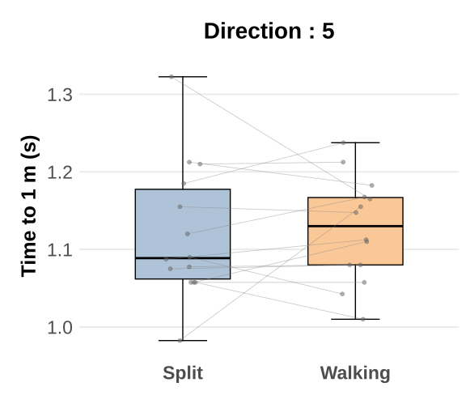
D6 방향별 그래프 · 제외 전후
S10 제외 · 14명
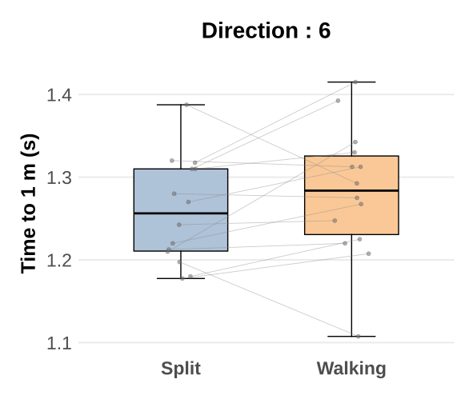
D7 방향별 그래프 · 제외 전후
S10 제외 · 14명
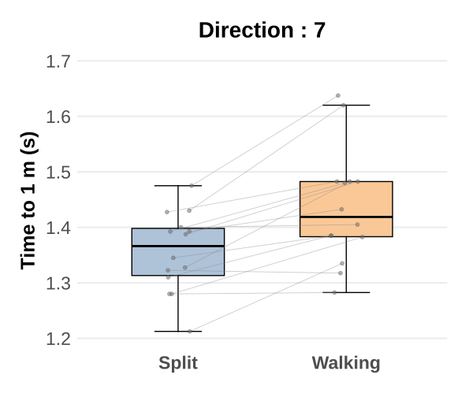
D8 방향별 그래프 · 제외 전후
S10 제외 · 14명
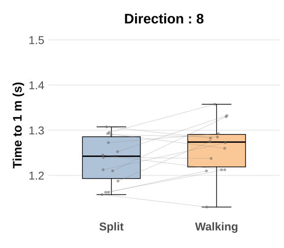
Distance (m)
S10 제외 · 14명
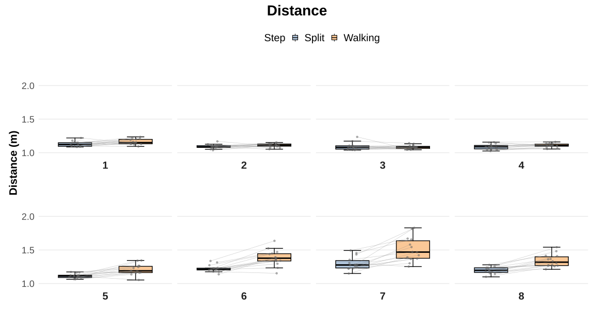
Walking − Split 대비
| 방향 | 차이 · 15명 | p · 15명 | 차이 · 14명 | 95% CI · 14명 | p · 14명 | 유의성 변화 |
|---|
| D1 | 0.0561 | 0.06451 | 0.0333 | -0.0043, 0.0710 | 0.0782 | 유지 |
| D2 | 0.0229 | 0.09766 | 0.0192 | -0.0095, 0.0479 | 0.1719 | 유지 |
| D3 | -0.0082 | 0.6165 | -0.0070 | -0.0438, 0.0299 | 0.6905 | 유지 |
| D4 | 0.0192 | 0.06057 | 0.0197 | -0.0021, 0.0415 | 0.07272 | 유지 |
| D5 | 0.1065 | 0.000328 | 0.0961 | 0.0496, 0.1427 | 0.0006365 | 유지 |
| D6 | 0.1980 | 0.0006496 | 0.1590 | 0.1049, 0.2132 | 2.545e-05 | 유지 |
| D7 | 0.2694 | 0.001706 | 0.2101 | 0.1252, 0.2950 | 0.0001326 | 유지 |
| D8 | 0.1817 | 0.001217 | 0.1422 | 0.0924, 0.1921 | 3.427e-05 | 유지 |
차이와 CI의 단위는 위 지표와 같다. 원 비교는 각 방향 안의 두 동작이며, 8방향 전체를 함께 보정한 값이 아니다. CI는 pointwise 95% CI이다.
D1 방향별 그래프 · 제외 전후
D2 방향별 그래프 · 제외 전후
S10 제외 · 14명
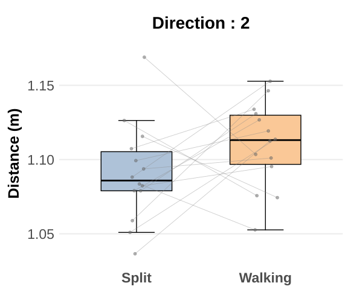
D3 방향별 그래프 · 제외 전후
S10 제외 · 14명
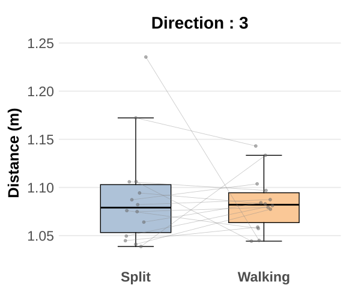
D4 방향별 그래프 · 제외 전후
S10 제외 · 14명
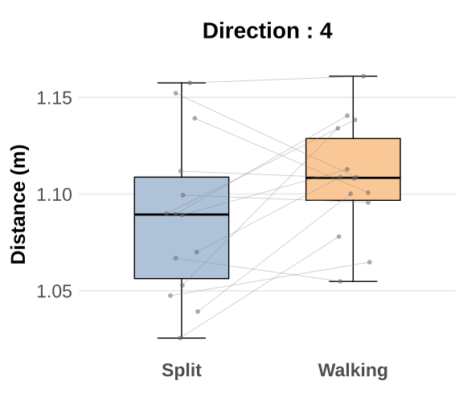
D5 방향별 그래프 · 제외 전후
S10 제외 · 14명
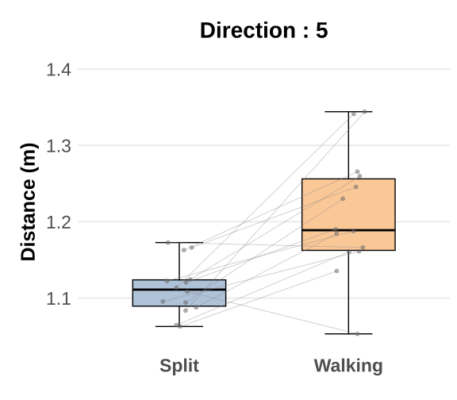
D6 방향별 그래프 · 제외 전후
S10 제외 · 14명
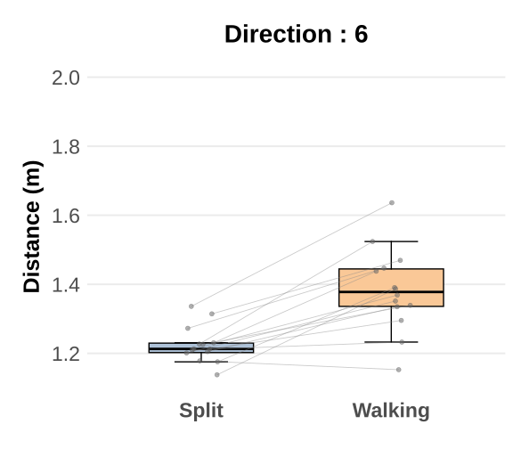
D7 방향별 그래프 · 제외 전후
S10 제외 · 14명
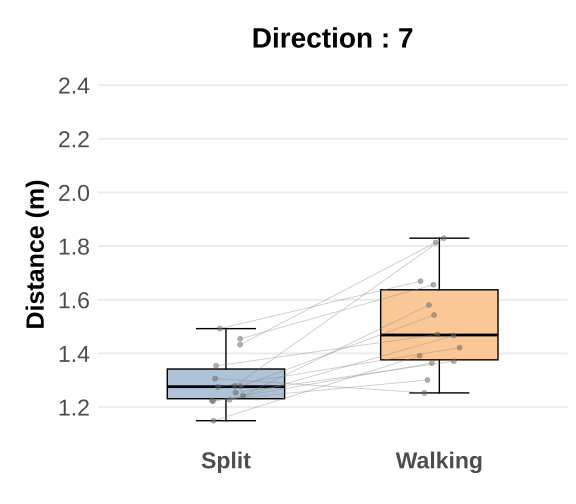
D8 방향별 그래프 · 제외 전후
S10 제외 · 14명
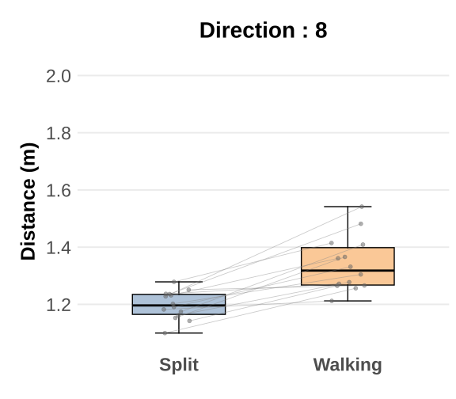
Speed (m/s)
S10 제외 · 14명
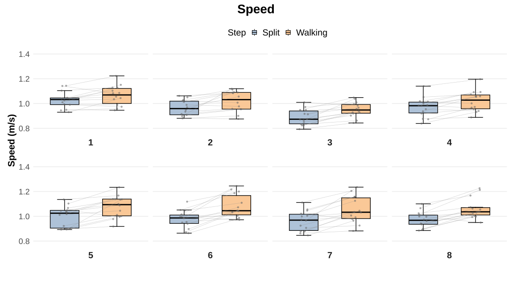
Walking − Split 대비
| 방향 | 차이 · 15명 | p · 15명 | 차이 · 14명 | 95% CI · 14명 | p · 14명 | 유의성 변화 |
|---|
| D1 | 0.0508 | 0.02399 | 0.0357 | 0.0050, 0.0665 | 0.02604 | 유지 |
| D2 | 0.0635 | 0.003586 | 0.0547 | 0.0178, 0.0917 | 0.006994 | 유지 |
| D3 | 0.0697 | 0.0001566 | 0.0625 | 0.0357, 0.0893 | 0.0002294 | 유지 |
| D4 | 0.0591 | 0.001137 | 0.0502 | 0.0236, 0.0768 | 0.001302 | 유지 |
| D5 | 0.0914 | 0.0009274 | 0.0775 | 0.0383, 0.1167 | 0.0009034 | 유지 |
| D6 | 0.1313 | 0.001228 | 0.1047 | 0.0612, 0.1483 | 0.0001726 | 유지 |
| D7 | 0.1217 | 0.005062 | 0.0906 | 0.0457, 0.1354 | 0.0007694 | 유지 |
| D8 | 0.1119 | 0.001153 | 0.0892 | 0.0531, 0.1252 | 0.0001325 | 유지 |
차이와 CI의 단위는 위 지표와 같다. 원 비교는 각 방향 안의 두 동작이며, 8방향 전체를 함께 보정한 값이 아니다. CI는 pointwise 95% CI이다.
D1 방향별 그래프 · 제외 전후
S10 제외 · 14명
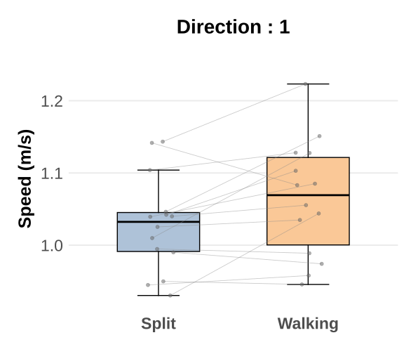
D2 방향별 그래프 · 제외 전후
S10 제외 · 14명
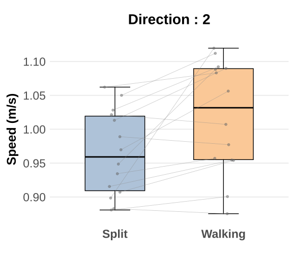
D3 방향별 그래프 · 제외 전후
S10 제외 · 14명
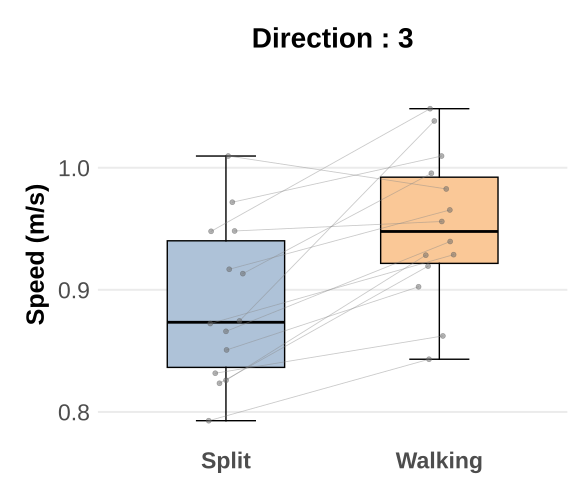
D4 방향별 그래프 · 제외 전후
S10 제외 · 14명
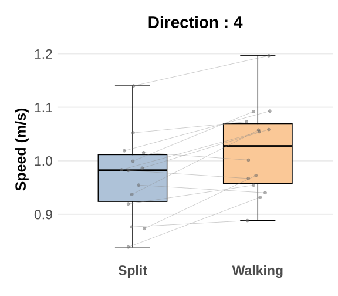
D5 방향별 그래프 · 제외 전후
S10 제외 · 14명
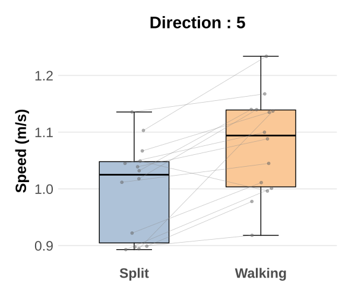
D6 방향별 그래프 · 제외 전후
S10 제외 · 14명
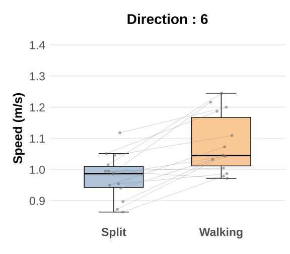
D7 방향별 그래프 · 제외 전후
S10 제외 · 14명
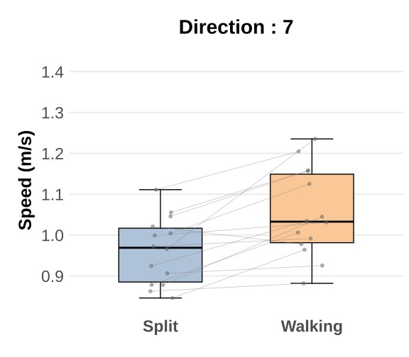
D8 방향별 그래프 · 제외 전후
분석 범위
사용자가 지정한 참가자 전체 제외 민감도 분석이다. 통계적 극단값이라는 이유만으로 오류 자료로 판정한 것은 아니다. 원 주분석·원고의 수치는 자동으로 교체하지 않았다. 원 코드의 사후표 생성 조건인 보정 전 p<.05를 유지했으며, 상호작용 보고 판단은 pGG를 기준으로 했다. 제외 후 PathLength2D의 congruency×direction은 그 생성 조건도 충족하지 않아 해당 사후표가 없다.
추가 정규성 진단은 14명 participant-level paired differences에 적용했다. GG는 정규성 보정이 아니다. 계산·보정 설명: MathWorks epsilon, MathWorks Bonferroni 비교.